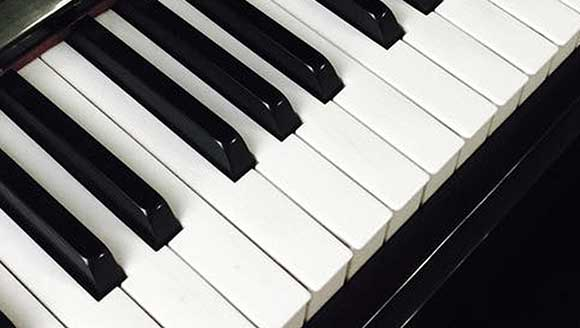

PSYCHE （赛奇初代）
走进你的灵魂
一个能提升大脑能力，促进大脑健康的脑电波（EEG）智能头箍

支持程序扩展
Psyche配套的应用程序均会封装成SDK，开放API接口，
可供其他公司或合作伙伴进行二次开发

应用领域
APPLICATION FIELD
-
教育领域
教育领域提升注意力，提高学生学习效率；监测孩子学习特征，实现“个性化学习”
-
健康领域
神经反馈训练，让用户拥有一个更健康的大脑；通过冥想练习， 减轻大脑压力（能有效减少体内压力激素的分泌），改善亚健康

娱乐领域
戴上“它”，就能拥有一种“神奇力量”，用户可以和复仇者联盟里的 “绯红女巫”一样，使用“念力”驾驭现实，任意操控智能设备和游戏
- 
艺术领域
PSYCHE可以让用户用大脑状态表达音乐歌声，脑电波被智能映射到各种音乐参数， 通过插件创建声音纹理和轮廓，谱写出用户想要的非凡之曲，圆其艺术创作之梦